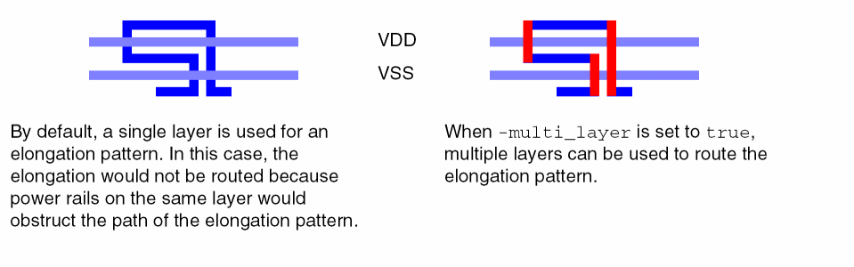
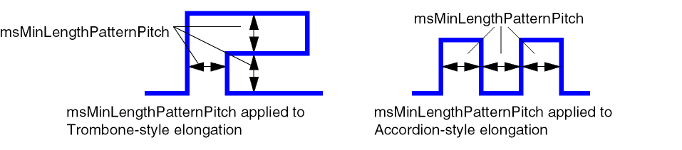

fix_length
fix_length [ -setd_setObj] [ -accordion_heightf_micron] [ -detour [ true | false ] ] [ -do_composite [ true | false ] ] [ -match_paths [ true | false ] ] [ -min_segment_lengthf_micron] [ -multi_layer [ true | false ] [ -triple_layer [ true | false ] ] ] [ -report [ true | false ] ] [ -reset_max_lengthf_micron] [ -shift_pattern [ true | false ] ] [ -sink_driver [ true | false ] ] [ -start_distancef_micron] [ -tune_pattern [ true | false ] ]
Description
Controls the length of individual nets and/or matches the length of groups of nets, including differential pair nets, or groups of routes within a tolerance.
Nets must be detail routed before using this command.
Two types of length fixing are supported and each has specific requirements:
-
To fix lengths on individual nets, you must first set the
routeMinLengthconstraint. -
To match net lengths relative to each other, you must first create the net group of nets and, optionally, set the
msTolerance(ormatchTolerance) andmsMatchPerLayerconstraints. Wire is added to the shorter nets to match the longest net of the group.
To match lengths at the composite level for groups of net pairs, use -do_composite true -multi_layer true.
Elongation methods can also be customized:
-
To prevent lengthening on a specific layer, set the
lengthPatternOffconstraint totruefor the layer. -
To restrict the use of an elongation pattern, set the constraint for the pattern (
lengthPatternEndRun,lengthPatternAccordion,lengthPatternRWAccordion, orlengthPatternTrombone) tofalse. Otherwise, all of these patterns can be used. - To permit elongation by adding dangles, set lengthPatternDangle to the desired dangle style. If this constraint is not set, dangles are not used for elongation.
-
To use more than one metal layer for elongation patterns, use
-multi_layertrue. This can offer flexibility for routing around existing wires, as shown in the following figure. By default, a single layer is used for elongation patterns. Use-multi_layertrue -triple_layer trueto use up to three metal layers for elongation.
 -
To specify the same net spacing for elongation patterns, use the msMinLengthPatternPitch constraint.

Arguments
Examples
The following examples are for the fix_length command.
Relative Length Matching of Nets in a Set
The following example creates a net group of all nets whose names start with MATCHB, then detail routes the nets, and finally matches the lengths of the nets by elongating the shorter nets, within a tolerance of 1.0.
update_net_connectivity -all
set MATCHBset [find_net -name MATCHB*]
create_group -name MATCHB -set $MATCHBset -type net_match
# create a constraint group for the net_match group and initialize the new # constraint group with the constraints from the LEFDefaultRouteSpec create_constraint_group -name GM -type group2group set_constraint_group -default GM -net_group MATCHB copy_constraint -group LEFDefaultRouteSpec -to_group GM # Set the tolerance. If this constraint is not set, the default tolerance is used. set_constraint -group GM -constraint matchTolerance -Value 1.0 # route the nets detail_route # match/fix lengths fix_length -set $MATCHBset
Controlling the Length of a Single Net Using routeMinLength
The following example sets routeMinLength and routeMaxLength constraints for netA, checks the length of netA, then lengthens it, without allowing elongation on the Metal2 layer.
update_net_connectivity -all
detail_route
create_constraint_group -name GA
set_constraint_group -default GA -net netA
copy_constraint -group LEFDefaultRouteSpec -to_group GA
set_layer_constraint -layer Metal2 -group GA -constraint lengthPatternOff -BoolValue true
set_constraint -group GA -constraint routeMinLength -Value 75.0
set_constraint -group GA -constraint routeMaxLength -Value 77.0
check_length
fix_length
Controlling the Lengths of Nets in a Set Using routeMinLength
The following example sets routeMinLength and routeMaxLength constraints for the nets in the selected set, checks the lengths of the nets, then lengthens them, as needed.
update_net_connectivity -all
detail_route
create_constraint_group -name GA
set_constraint_group -default GA -set [get_selection_set]
copy_constraint -group LEFDefaultRouteSpec -to_group GA
set_constraint -group GA -constraint routeMinLength -Value 75.0
set_constraint -group GA -constraint routeMaxLength -Value 77.0
check_length -set [get_selection_set]
fix_length -set [get_selection_set]
Relative Length Matching of Net Pair Groups
The following example performs relative length matching at the composite level for two net pairs.
# define the net pairs
set c1nets [or_sets -set1 [find_net -name clk1n] -set2 [find_net -name clk1p]]
set c2nets [or_sets -set1 [find_net -name clk2n] -set2 [find_net -name clk2p]]
create_group -name c1_pair -set $c1nets -type net_pair
create_group -name c2_pair -set $c2nets -type net_pair
# create a net group for matching the net pairs create_group -name clkGroup -set [find_group -name c*_pair -type net_pair] -type net_match # create the constraint group create_constraint_group -name GC # assign the constraint group to the pairs set_constraint_group -default GC -net_group c2_pair set_constraint_group -default GC -net_group c1_pair set_constraint_group -default GC -net_group clkGroup # set constraint values by copying from existing, then setting indiv constraints copy_constraint -group LEFDefaultRouteSpec -to_group GC set_constraint -group GC -constraint lengthPatternRWAccordion -BoolValue false set_constraint -group GC -constraint lengthPatternAccordion -BoolValue false
# set the allowed Tolerance: all nets must be no more than 10% shorter than the
# longest net length
set_constraint -group GC -constraint msTolerance -FltValue 10
# set same net spacing to power pitch set_layer_constraint -layer M8 -group GC -constraint msMinLengthPatternPitch -hardness hard -Value 9.0 set_layer_constraint -layer M7 -group GC -constraint msMinLengthPatternPitch -hardness hard -Value 9.0 # disable elongation on all but M7 and M8 foreach layer {M1 M2 M3 M4 M5 M6 M9 MD} { set_layer_constraint -layer $layer -constraint lengthPatternOff -BoolValue true -group GC}
set_constraint -group GC -constraint validRoutingLayers -hardness hard -LayerArrayValue {M7 M8}
set_constraint -group GC -constraint limitRoutingLayers -hardness hard -LayerArrayValue {M7 M8}
# Create the net pair topology pair_create_topology # route the composite nets global_route croute detail_route # match lengths on nets relative to the length of the longest net fix_length -do_composite -multi_layer true # divide composite nets, preserving the topology of the composite net pair_divide -preserve_topology true
Matching Lengths of Net Pairs Using Minimum and Maximum Route Lengths
The following example performs length matching at the composite level for two net pairs whose lengths must be greater than or equal to routeMinLength and less than or equal to routeMaxLength.
# define the net pairs
create_group -name c1_pair -set [or_sets -set1 [find_net -name clk1n -set2 [find_net -name clk1p] -type net_pair
create_group -name c2_pair -set [or_sets -set1 [find_net -name clk2n -set2 [find_net -name clk2p] -type net_pair
# create the constraint group create_constraint_group -name GC # assign the constraint group to the pairs set_constraint_group -default GC -net_group c2_pair set_constraint_group -default GC -net_group c1_pair # set constraint values by copying from existing, then setting indiv constraints copy_constraint -group LEFDefaultRouteSpec -to_group GC # set absolute min and max lengths set_constraint -group GC -constraint routeMinLength -Value 1472 set_constraint -group GC -constraint routeMaxLength -Value 1490 set_constraint -group GC constraint lengthPatternRWAccordion -BoolValue false set_constraint -group GC constraint lengthPatternAccordion -BoolValue false # set same net spacing to the power pitch set_layer_constraint -layer M8 -group GC -constraint msMinLengthPatternPitch -hardness hard -Value 9.0 set_layer_constraint -layer M7 -group GC -constraint msMinLengthPatternPitch -hardness hard -Value 9.0 # disable elongation on all but M7 and M8 foreach layer {M1 M2 M3 M4 M5 M6 M9 MD} { set_layer_constraint -layer $layer -constraint lengthPatternOff -BoolValue true -group GC}
set_constraint -group GC -constraint validRoutingLayers -hardness hard -LayerArrayValue {M7 M8}
set_constraint -group GC -constraint limitRoutingLayers -hardness hard -LayerArrayValue {M7 M8}
# Create the net pair topology pair_create_topology # route the composite nets global_route croute detail_route # match lengths on nets using absolute routeMinLength and routeMaxLength fix_length -do_composite -multi_layer true # divide composite nets, preserving the topology of the composite net pair_divide -preserve_topology true
Related Topics
Return to top